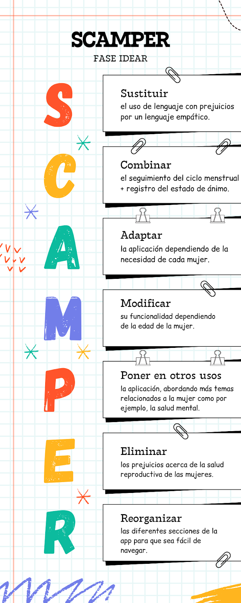

University Project Documents
En Bogotá, la inseguridad y la falta de importancia a la salud reproductiva han sido temas recurrentes en la vida de las mujeres. Este blog indaga acerca de los problemas que vive la población femenina, el impacto que deja en sus vidas y cómo generamos una solución para mejorar la calidad de vida de ellas.
La seguridad de las mujeres en la capital del país es cada día más preocupante, ya que aunque las cifras suben cada año, el grado de impunidad por casos de violencia sexual en el país es de 99,71% (Concejo de Bogotá, 2025).
Un tema tan significativo como la educación sexual y reproductiva, sigue siendo censurada y vista de una manera conservadora en Bogotá, lo que causa la ignorancia y la falta de educación frente a esta. Por lo tanto, aunque el ministerio de educación ha tratado de implementar talleres para abordarlos, aún se percibe la falta de acceso a información confiable.
La escasa relevancia que se le ha dado a la mujer en Bogotá con respecto al acceso de información sobre su propio cuerpo y el miedo frente a la inseguridad, ha tenido consecuencias prevalentes en el bienestar de la población femenina, generando preocupaciones a la falta de visibilidad a estas cuestiones.
Educación sexual:
- Ausencia de temas de educación sexual en los colegios.
- Educación insuficiente acerca de métodos anticonceptivos para la prevención de enfermedades de transmisión sexual.
- Falta de empatía hacia los embarazos adolescentes.
- Poca presencia de conocimiento de parte de la población masculina sobre los efectos que vienen con la menstruación y el embarazo.
- Desconocimiento de líneas de ayuda en la capital.
Seguridad:
- Injusticia a casos de violencia femenina, por lo que no muchas mujeres denuncian sus casos.
- Falta de medidas de protección efectivas.
- Cultura patriarcal, en donde se infiere de manera incorrecta el mandato absoluto al hombre.
Entrevistas: Empatía hacia las mujeres de nuestra capital.
En esta parte del blog, se expondrán entrevistas realizadas a mujeres con el objetivo de acercarnos a nuestra población escogida y empatizar con sus experiencias personales y sus puntos de vista acerca de la situación del país en los temas abordados.
Encuesta a mujeres que residen en Bogotá:
En esta sección nos queremos enfocar en una encuesta realizada a mujeres anónimas de la ciudad de Bogotá. A continuación, con el uso de la herramienta de formularios de google, se presentan los resultados que nos ayudarán con nuestra investigación de la problemática.
Las mujeres que realizaron la encuesta nos dieron sus recomendaciones y deseos de los cambios que les gustaría ver en la capital:
Fase empatizar: Mapa de empatía
A continuación les mostraremos un mapa de empatía. Estos mapas nos ayudan a analizar a nuestra población para entender que sienten, que desean y que experimentan, para así acercarnos más al usuario.

de analizar las investigaciones, entrevistas, etc. se pudo definir que:
Muchas mujeres se sienten inseguras al caminar por la calle solas en la noche.
En el transporte público debe de tener cuidado ya que en cualquier momento pueden ser acosadas por su manera de vestir.
Falta de información para tener control de su ciclo menstrual y métodos anticonceptivos.
Algunas aplicaciones existentes no son lo suficientemente útiles para casos de inseguridad y acoso en las mujeres.
Identificación del problema:
Las Mujeres necesitan un espacio donde se puedan sentir libres de contar sus experiencias y que tengan el apoyo y la ayuda necesaria.
Establecer el objetivo:
El objetivo de esta app es poder ayudar a las mujeres a sentirse más seguras y poder obtener toda la información necesaria y el registro de sus ciclos menstruales, acompañado de consejos que les pueden funcionar.
Definición del público:
El público para cual está orientado esta aplicación es para las mujeres, niñas, y señoras de la tercera edad.
Identificación de los recursos funcionales:
Esta app brinda módulos en los cuales se especifica la información que vas a recibir para que todo el proceso sea más rápido y eficaz.
Plataformas usadas:
Android studio como ambiente de creación, GitHub, herramientas de inteligencia artificial.
Percepciones y experiencias de cada participante en cuanto a la Fase EMPATIZAR y la Fase DEFINIR
Valery Hernández Rodríguez, 1er semestre Ing Biomédica:
A lo largo de mi vida he escuchado historias de mujeres pasando por casos de acoso o falta de conocimiento sobre su propia salud reproductiva, llevándome a empatizar profundamente con cada una de ellas. La creación de esta aplicación ha sido una oportunidad para ayudar a las mujeres a alcanzar una mejor calidad de vida, en la cual nos sentimos felices de poder contribuir a un cambio a la vida de cada una de ellas.
David Santiago Herrera Betancourth, 1er semestre Ing Biomédica:
Emily Arrieta, 1er semestre Ing Biomédica:
He tenido que presenciar varias veces como muchas de las chicas a mi alrededor han sido sexualizadas o incluso acosadas, llegando al punto de verdad querer ocultarse del mundo que las rodea por miedo a ser llamadas débiles o incluso escuchar comentarios como de que ellas son las que buscan llamar ese tipo de atención y temer de que algo les pase camino a sus destinos.A la mayoría de las chicas que están entrando en la fase de la adolescencia no tienen un buen seguimiento por parte de los padres para hablar de los cambio hormonales que van a surgir en sus cuerpos, y brindarles una ayuda con los términos de llevar un registro menstrual, e incluso una guía a un mundo sexual, puede ser de gran ayuda para las mujeres que requieran de ella.
Leidy Alejandra Tuta, 1er semestre Ing Biomédica:
Una vez definido el problema, en la fase idear buscamos llegar a una solución que nos permita solucionar esta situación. Para ello, decidimos utilizar la herramienta "SCAMPER", el cual nos ayuda a generar ideas usando siente acciones clave: Sustituir, Combinar, Adaptar, Modificar, Proponer otros usos, Eliminar y Reordenar.
¿Cómo se hizo?
Empezamos a definir las funcionalidades clave y a implementarlas paso a paso. Por ejemplo, la parte de autenticación con usuarios, la sección de comunidad donde la gente puede postear, módulos de información sobre salud reproductiva y mental, y algo interesante como compartir la ubicación. A medida que construíamos cada parte, nos encontrábamos con bugs – errores de programación típicos. Nuestra tarea era diagnosticarlos (viendo los mensajes de error, entendiendo qué esperaba una parte del código de otra) y aplicar soluciones, a veces refactorizando (reorganizando el código) como hicimos con la lógica de actualizar la ubicación para que no cambiara el código de compartición. Fue un ciclo constante de añadir código, probar, encontrar errores y corregir.
¿Qué partes principales tiene la app?
- Autenticación: La puerta de entrada. Permite a los usuarios crear cuentas y acceder a la app.
- Comunidad: Un espacio social donde los usuarios logeados pueden ver publicaciones de otros, interactuar con ellas (dar likes, comentar) y compartir sus propios pensamientos o experiencias.
- Salud Reproductiva: Una sección informativa. Aquí clasificamos y mostramos información relevante sobre el ciclo menstrual, anticoncepción, embarazo y otros temas importantes de forma organizada.
- Salud Mental: Similar a la anterior, pero enfocada en el bienestar psicológico, con temas como ansiedad, manejo del estrés, etc.
- Compartir Ubicación: Una funcionalidad que permite a un usuario enviar un código a otra persona para que esta última pueda ver su ubicación actual en un mapa.
- Seguimiento Menstrual: (Aunque no profundizamos en su implementación, está definida como una parte clave en la navegación).
¿Qué tecnologías incluye y por qué las usamos?
- Kotlin: Es el lenguaje de programación principal. Lo elegimos porque es moderno, conciso y hace que escribir código Android sea mucho más agradable y eficiente que con Java.
- Jetpack Compose: Para construir toda la interfaz de usuario. Es el enfoque moderno y nativo de Android para crear UIs declarativas con Kotlin. Facilita mucho la creación de interfaces reactivas y complejas con menos código.
- Firebase: Una plataforma backend "sin servidor".
- Firebase Authentication: Lo usamos para manejar todo el registro y login de usuarios. Simplifica enormemente la gestión de usuarios sin tener que montar nuestro propio backend de autenticación.
- Firebase Firestore: Nuestra base de datos NoSQL en la nube. Es genial porque es fácil de usar y, lo más importante para la comunidad y la ubicación compartida, ofrece actualizaciones en tiempo real. Cuando alguien postea o mueve su ubicación, los demás ven el cambio casi al instante gracias a sus "snapshot listeners".
- Kotlin Coroutines y Flow: Estas herramientas de Kotlin van de la mano con Compose y Firebase. Las Coroutines nos permiten hacer operaciones que tardan mucho (como leer de la base de datos o pedir la ubicación) de forma asíncrona sin bloquear la interfaz. Los Flow son perfectos para manejar flujos de datos que cambian con el tiempo, como la lista de posts en la comunidad o la ubicación que se actualiza; el UI "observa" este Flow y se actualiza solo cuando llegan datos nuevos.
- Google Maps SDK for Android y Maps Compose: Obviamente, para mostrar el mapa en la función de ubicación. Usamos la biblioteca específica para Compose (maps-compose) porque se integra perfectamente con nuestra UI construida en Compose.
- MVVM (Model-View-ViewModel) y Patrón Repositorio: No son tecnologías en sí, sino patrones de arquitectura. Nos ayudan a organizar el código: el ViewModel prepara los datos para la vista (Compose), y los Repositorios saben de dónde obtener esos datos (Firestore, servicios de ubicación, etc.), manteniendo la lógica de negocio separada de la UI. Esto hace que el código sea más limpio, mantenible y más fácil de probar.
- Gradle Kotlin Script (.kts): Es cómo configuramos y gestionamos todas las librerías y la construcción del proyecto. Usar Kotlin Script es un enfoque más moderno y type-safe comparado con el Groovy tradicional.
En resumen, construimos Aurora de forma iterativa, pieza a pieza, resolviendo problemas a medida que aparecían. Nos basamos en tecnologías modernas de Android y Firebase para tener un backend potente y una UI reactiva con menos esfuerzo, organizando el código de forma limpia con patrones de arquitectura establecidos.
Con el objetivo de recibir retroalimentación y mejorar la experiencia del usuario, con la ayuda de usuarios reales les pedimos poner a prueba la aplicación de la fase prototipar. Pasado un mes, les hicimos a los usuarios las siguientes preguntas en base a su experiencia. Con el objetivo de recibir retroalimentación y mejorar la experiencia del usuario, con la ayuda de usuarios reales les pedimos poner a prueba la aplicación de la fase prototipar. Pasado un mes, les hicimos a los usuarios las siguientes preguntas en base a su experiencia.
- ¿Crees que tú calidad de vida se ha visto mejorada al usar esta aplicación? (en relación a salud reproductiva y seguridad)
- Del 1 al 10 ¿qué tan satisfecha te encuentras con la aplicación? ¿por qué?
- ¿Recomendarías la aplicación a otras mujeres?
- ¿Qué mejorarías de la aplicación?
Entrevista 3
Entrevista 1
Entrevista 2
David Herrera, Ing Biomedica
Emily Arrieta, Ing Biomedica
Alejandra Tuta, Ing Biomedica
Valery Hernandez, Ing Biomedica